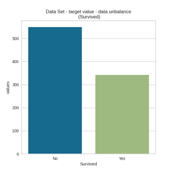
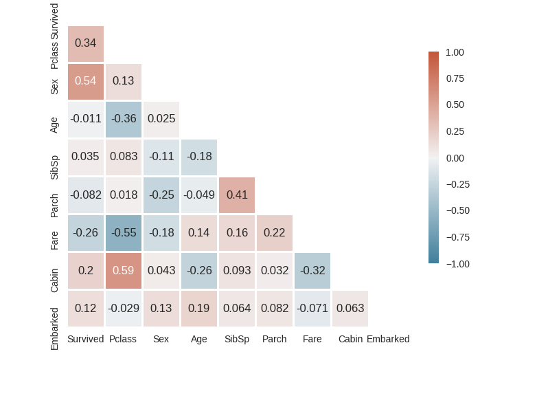
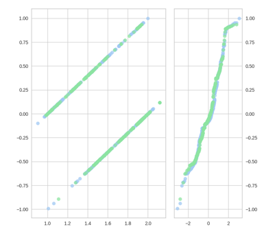
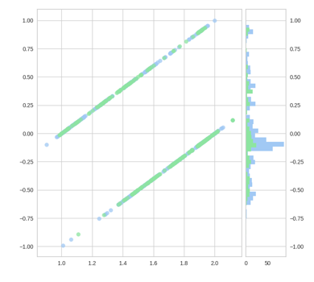
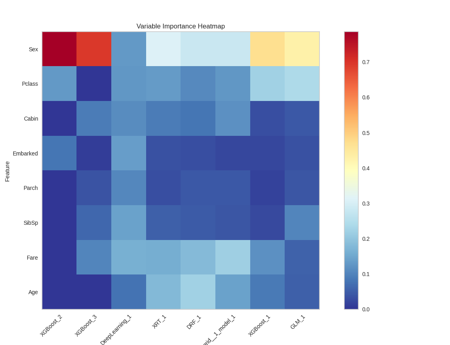
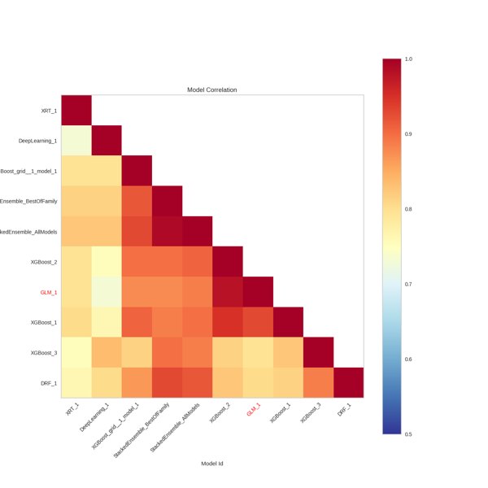

In statistics, exploratory data analysis is an approach to analyzing data sets to summarize their main characteristics, often using statistical graphics and other data visualization methods. A statistical model can be used or not, but primarily
EDA is for seeing what the data can tell us beyond the formal modeling or hypothesis testing task. Exploratory data analysis was promoted by John Tukey to encourage statisticians to explore the data, and possibly formulate hypotheses that
could lead to new data collection and experiments. EDA is different from initial data analysis (IDA), which focuses more narrowly on checking assumptions required for model fitting and hypothesis testing, and handling missing values and making
transformations of variables as needed. EDA encompasses IDA.
Several characteristics define a data set's structure and properties. These include the number and types of the attributes or variables, and various statistical measures applicable to them, such as standard deviation and kurtosis. The values may be numbers,
such as real numbers or integers, for example representing a person's height in centimeters, but may also be nominal data (i.e., not consisting of numerical values), for example representing a person's ethnicity. More generally, values
may be of any of the kinds described as a level of measurement. For each variable, the values are normally all of the same kind. However, there may also be missing values, which must be indicated in some way.
OLS Regression Results
==============================================================================
Dep. Variable: Survived R-squared: 0.384
Model: OLS Adj. R-squared: 0.379
Method: Least Squares F-statistic: 68.79
Date: Thu, 11 Mar 2021 Prob (F-statistic): 1.13e-87
Time: 15:18:42 Log-Likelihood: -405.95
No. Observations: 891 AIC: 829.9
Df Residuals: 882 BIC: 873.0
Df Model: 8
Covariance Type: nonrobust
==============================================================================
coef std err t P>|t| [0.025 0.975]
------------------------------------------------------------------------------
Intercept 0.2053 0.107 1.920 0.055 -0.005 0.415
Pclass 0.1532 0.023 6.681 0.000 0.108 0.198
Sex 0.5159 0.028 18.109 0.000 0.460 0.572
Age 0.0026 0.001 3.186 0.001 0.001 0.004
SibSp 0.0379 0.013 2.866 0.004 0.012 0.064
Parch 0.0072 0.018 0.394 0.694 -0.029 0.043
Fare -0.0004 0.000 -1.171 0.242 -0.001 0.000
Cabin 0.0004 0.000 0.726 0.468 -0.001 0.001
Embarked 0.0239 0.021 1.142 0.254 -0.017 0.065
==============================================================================
Omnibus: 41.874 Durbin-Watson: 1.893
Prob(Omnibus): 0.000 Jarque-Bera (JB): 46.798
Skew: -0.559 Prob(JB): 6.89e-11
Kurtosis: 3.104 Cond. No. 1.21e+03
==============================================================================
Notes:
[1] Standard Errors assume that the covariance matrix of the errors is correctly specified.
[2] The condition number is large, 1.21e+03. This might indicate that there are
strong multicollinearity or other numerical problems.
In statistical modeling, regression analysis is a set of statistical processes for estimating the relationships between a dependent variable (often called the 'outcome variable') and one or more independent variables (often called 'predictors',
'covariates', or 'features'). The most common form of regression analysis is linear regression, in which one finds the line (or a more complex linear combination) that most closely fits the data according to a specific mathematical criterion.

The accuracy paradox is the paradoxical finding that accuracy is not a good metric for predictive models when classifying in predictive analytics. This is because a simple model may have a high level of accuracy but be too crude to be
useful. For example, if the incidence of category A is dominant, being found in 99% of cases, then predicting that every case is category A will have an accuracy of 99%. Precision and recall are better measures in such cases. The underlying
issue is that there is a class imbalance between the positive class and the negative class. Prior probabilities for these classes need to be accounted for in error analysis. Precision and recall help, but precision too can be biased by
very unbalanced class priors in the test sets.

In statistics, correlation or dependence is any statistical relationship, whether causal or not, between two random variables or bivariate data. In the broadest sense correlation is any statistical association, though it commonly refers
to the degree to which a pair of variables are linearly related.
In statistics, multicollinearity (also collinearity) is a phenomenon in which one predictor variable in a multiple regression model can be linearly predicted from the others with a substantial degree of accuracy. In this situation, the coefficient estimates
of the multiple regression may change erratically in response to small changes in the model or the data. Multicollinearity does not reduce the predictive power or reliability of the model as a whole, at least within the sample data set;
it only affects calculations regarding individual predictors. That is, a multivariate regression model with collinear predictors can indicate how well the entire bundle of predictors predicts the outcome variable, but it may not give valid
results about any individual predictor, or about which predictors are redundant with respect to others.


In statistics and optimization, errors and residuals are two closely related and easily confused measures of the deviation of an observed value of an element of a statistical sample from its "theoretical value". The error (or disturbance)
of an observed value is the deviation of the observed value from the (unobservable) true value of a quantity of interest, and the residual of an observed value is the difference between the observed value and the estimated value of the
quantity of interest.
In machine learning, hyperparameter optimization or tuning is the problem of choosing a set of optimal hyperparameters for a learning algorithm. A hyperparameter is a parameter whose value is used to control the learning process. By contrast,
the values of other parameters (typically node weights) are learned.
AutoML - Results The models are classified by a standard metric based on the type of problem (the second column of the scoreboard). In binary classification problems, this metric is AUC, and in classification problems in several classes, the metric is
the average error per class. In regression problems, the standard classification metric is deviation.
Partial dependence plot (PDP) gives a graphical depiction of the marginal effect of a variable on the response. The effect of a variable is measured in change in the mean response. PDP assumes independence between the feature for
which is the PDP computed and the rest.
An Individual Conditional Expectation (ICE) plot gives a graphical depiction of the marginal effect of a variable on the response. ICE plots are similar to partial dependence plots (PDP); PDP shows the average effect of a feature
while ICE plot shows the effect for a single instance. This function will plot the effect for each decile. In contrast to the PDP, ICE plots can provide more insight, especially when there is stronger feature interaction.
Variable Importance by Model

AML - Partial Dependence
Ensemble - (ICE) Individual Condition Expectation
Correlation Heatmap by Model

Model Performance
Analytical Performance Modeling
Analytical Performance Modeling is a method to model the behaviour of a system in a spreadsheet. It is used in Software performance testing. It allows evaluation of design options and system sizing based on actual or anticipated business usage. It is
therefore much faster and cheaper than performance testing, though it requires thorough understanding of the hardware platforms